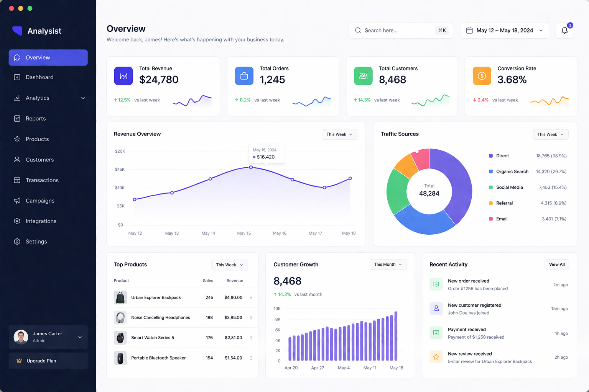
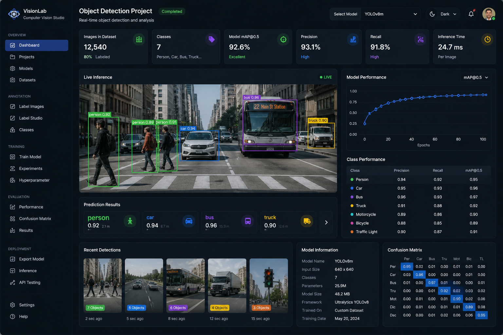
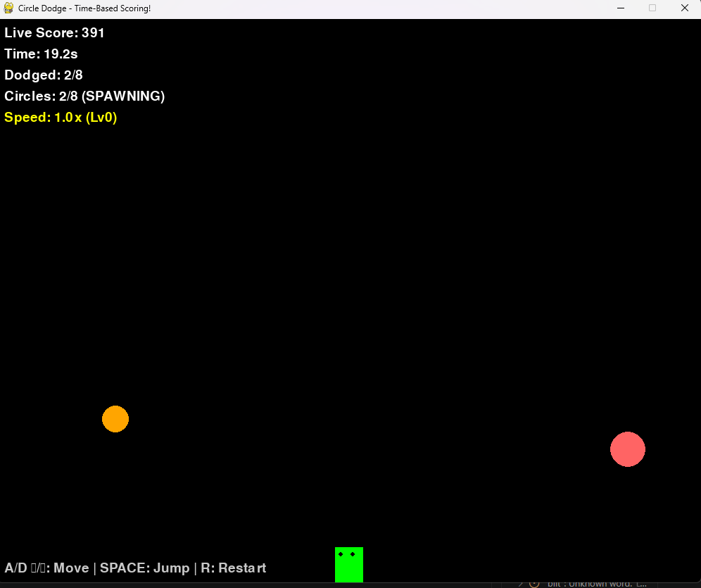

Analytics dashboard
Designed to help analysts monitor, interpret, and manage large volumes of data in a centralized interface. It provides real-time insights into datasets, model performance, and business metrics, enabling users to make informed, data-driven decisions efficiently.

VisionTrack
This project is a computer vision application designed to detect and recognize objects in images or video in real time. It works like a smart system that can “see” through a camera and identify different objects such as people, vehicles, or other items.

Dodgeball Game
This project is a 2D arcade-style survival game developed using Pygame. The player moves and jumps to avoid bouncing obstacles that increase over time, with dynamic difficulty and a score based on survival time.
